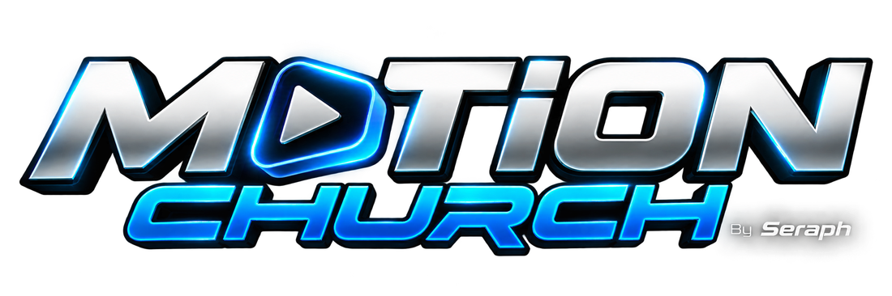
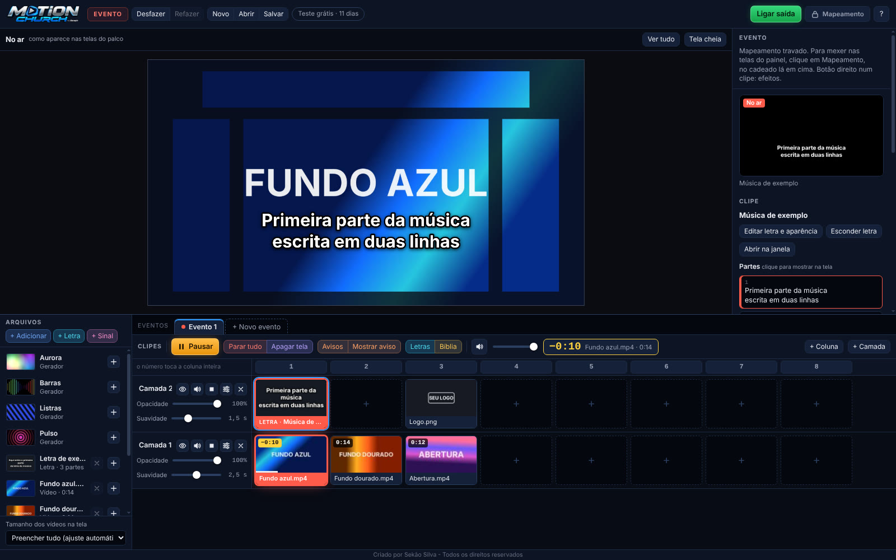
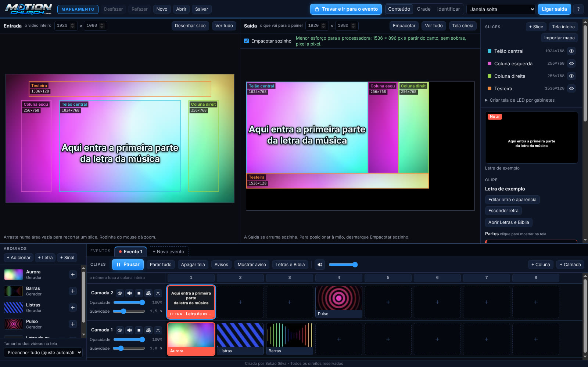

O culto inteiro no LED e nos projetores, sem complicação.
Mapeie o painel de LED ou junte os projetores uma vez e, no culto, só clique: vídeos, letras de música, Bíblia, câmera ao vivo, efeitos e avisos saindo prontos para cada tela do palco.
Mac com processador Intel? Baixe aqui · Ver as videoaulas

Monte uma vez. No culto, é só clicar.
O programa tem duas páginas separadas, para nada se misturar: a técnica fica guardada no Mapeamento, e o Evento tem só o que se usa no culto.

As telas, uma vez por palco
Recorte o vídeo para cada tela de LED, junte projetores e acerte a imagem torta. Depois é só travar.
- Slices
- Painel de LED
- Blend de projetores
- Keystone
O culto, um clique por vez
No jeito do Resolume: à esquerda, o que está no ar e a prévia logo embaixo, para conferir antes; o resto da tela é da grade com os clipes. Arquivos e propriedades só aparecem quando você pede. Letras e Bíblia em janelas separadas. Cada culto salvo com o seu nome. Ninguém desmonta as telas sem querer.
- No ar e Prévia
- Grade de clipes
- Projeto por culto
- Letras
- Bíblia
- Avisos
- Câmera ao vivo
Tudo o que o culto precisa, num programa só
Painel de LED
Recorte o vídeo para cada tela do palco. Recebeu o mapa pronto da equipe de LED? Importe o PNG, JPG ou PSD e as telas são criadas sozinhas.
Projetores
Blend de 2 a 6 projetores numa imagem só, com a emenda suave pronta. Projetor torto? Ajuste canto a canto (keystone) direto na tela.
Letras e Bíblia
Banco de letras, versículos digitados como você fala (Jo 3:16, sl 23) e o roteiro do culto montado antes, na ordem.
Câmera ao vivo
Câmera ou placa de captura direto nas telas escolhidas, junto com os vídeos e as letras por cima.
Grade de clipes
Camadas e colunas como no Resolume: clicou, está no ar, com troca suave. Prévia antes de ir para o ar e o tempo que falta.
Vários eventos
Culto de manhã e outro à tarde? Cada evento numa aba, com o mesmo mapeamento: troque só o que muda.
Efeitos e avisos
Estrobo, preto e branco, trocar cor e mais, no botão direito. Avisos rolando ou piscando por cima de tudo.
Atualiza sozinho
Quando sai uma versão nova, o programa avisa e se atualiza com um clique, sem perder os seus projetos.
Escolha o seu computador
Use tudo por 15 dias, de graça. Os links sempre trazem a versão mais nova.
Mac com chip Apple
M1 a M5 · MacBook Neo (A18 Pro)
Mac com Intel
Processador Intel
Não sabe qual é o seu Mac? Clique na maçã no canto da tela → Sobre Este Mac. Se aparecer Chip Apple M1, M2, M3, M4, M5 ou A18 Pro (o MacBook Neo), é o primeiro; se aparecer Processador Intel, é o segundo.
Instalar no Mac
- Abra o arquivo baixado. Ele vira o aplicativo Motion Church.
- Arraste o Motion Church para a pasta Aplicativos e abra.
- Na primeira vez o Mac avisa que não pode verificar o aplicativo. Clique em Concluído, abra Ajustes do Sistema → Privacidade e Segurança, role até o fim e clique em Abrir Mesmo Assim.
- Ao usar a câmera pela primeira vez, clique em Permitir.
O aviso do passo 3 aparece só uma vez em cada Mac.
Instalar no Windows
- Abra o MotionChurch-Windows.exe baixado.
- Se aparecer "O Windows protegeu o computador", clique em Mais informações e depois em Executar assim mesmo.
- Clique em Instalar. O atalho fica na Área de Trabalho e no menu Iniciar.
O aviso do passo 2 é normal para programas novos, fora da loja da Microsoft.
Aprenda em poucos minutos
Uma aula para cada assunto, com legendas. Valem para Mac e Windows.
O Motion Church em 6 minutos
Um giro pela tela e o caminho completo: montar as telas, colocar vídeos e letras e tocar o culto.
Use grátis. Depois, seja um colaborador.
O Motion Church é mantido pela colaboração das igrejas que usam. Colabore com o valor que o seu coração mandar, a partir de R$ 49,90 por ano: você garante o uso em um computador e ajuda as próximas versões.
15 dias grátis, com tudo liberadoBaixe, instale e use no culto. O aviso no alto da tela mostra quantos dias faltam.
Colabore pelo próprio programaClique no aviso "Seja colaborador", lá em cima: tem o QR Code do Pix, o copia e cola, e cartão ou boleto pelo Mercado Pago.
Receba o código de colaboradorMande o comprovante e o código do computador (aparece na mesma janela) pelo WhatsApp. Você recebe o código de colaborador com o nome da sua igreja: cole no programa e pronto.
Cada colaboração libera um computador por um ano. Sem colaboração, o programa continua funcionando, com a marca "versão de teste" nas telas.
Começar o teste grátisAntes de baixar
Funciona no MacBook Neo?
Sim. O MacBook Neo tem chip Apple (A18 Pro): baixe a versão Mac com chip Apple e instale do mesmo jeito. Atenção: ele liga só uma tela externa (até 4K). Para mandar para o painel de LED e um projetor ao mesmo tempo, ou para vários projetores, use um divisor de sinal (splitter) ou a própria processadora de LED, ou escolha um Mac com chip M, que liga mais telas.
Precisa de internet?
Não. O programa funciona sem internet. Com internet, ele só procura versões novas.
Dá para usar com projetores?
Sim. O assistente Blend de projetores junta 2 a 6 projetores numa imagem só, lado a lado ou um em cima do outro, com a borda suave na emenda já pronta. Cada borda tem ajuste fino de largura e curva, e o Deformar acerta projetor torto canto a canto (keystone).
Funciona com qualquer painel de LED?
Sim. A processadora de LED enxerga o computador como um monitor: o programa manda a imagem pelo cabo HDMI e cada tela recebe o seu pedaço.
Quais arquivos de vídeo abrem?
MP4 ou MOV em H.264, WebM, imagens PNG e JPG (inclusive com fundo transparente) e áudio MP3 ou WAV.
E as versões da Bíblia?
Vêm três versões de uso livre: Bíblia Livre, Bíblia Livre Textus Receptus e Nova Versão de Acesso Livre. Outras versões podem ser importadas por quem tem o arquivo.
Perco meus projetos ao atualizar?
Não. Projetos, banco de letras e o código de colaborador ficam guardados no computador e continuam depois de cada atualização.
Tenho mais de um evento no mesmo dia. Preciso mapear de novo?
Não. Em cima da grade de clipes ficam as abas dos eventos: "+ Novo evento" usa o mesmo mapeamento e copia a grade atual, e você troca só o que muda.
Posso usar em mais de um computador?
Pode instalar em quantos quiser e testar 15 dias em cada um. A colaboração é por computador: cada código de colaborador vale só no computador para o qual foi gerado.